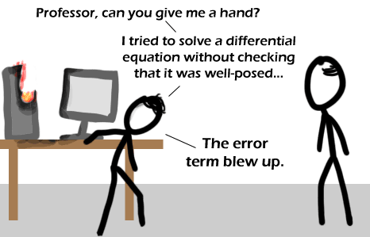

Comic JK 388
When I Feel Like It
⇤
<
?
>
⇥

⇤
<
?
>
⇥
Forum
.
RSS
.
Digg
.
Facebook
.
Reddit
.
Twitter
.
Stumbleupon
Enter your thoughts on number 388 here. Please, no spamming, trolling, or phreaking. ...this is like dividing by zero. You just _don't_do_it_. >I have a program RIGHT NOW for my final project where dividing by zero is necessary and expected. The result is inf, and is dealt with sanely. 0/0 is much more of a problem - resulting in NaN. >>If the computer were really dividing by zero, it would never finish. It would take an infinite amount of time and resources. So, your program is not in fact dividing by zero. >>>That's simply incorrect; the good people who make computers are nowhere near stupid enough to implement division through repeated subtraction. Grade 3s can do better. also, an infinite amount of resources? Why would it be allocating more memory? >When you take the derivative of a function you are dividing by zero sort of >>No, you're dividing by an infinitely tiny slice, but you do it infinitely many times, so they cancel out >>>That's what she said. ...trying fruitlessly to come up with some double entendre on the subject of "stiffness" here... > oh tighten up and let's take a walk in the woods. What computer algebra packages do people use? My computer is frying like that comic just trying to get some basic polynomials resolved in Mathematica 7. Faster to do it by hand. > I've used python and numpy/scipy for a while now. Though admittedly (sp?) I don't use it a lot for symbolic manipulations or even solving equations: I use it with matrices and vector analysis. >> Hah, you sound like me. Thoughtful and detailed question, hopefully easily answerable by any of the commentors without agitating much thought out of their mountains of knowledge..but instead you get this. I'm sorry I can't help. Your lecturer probably can.